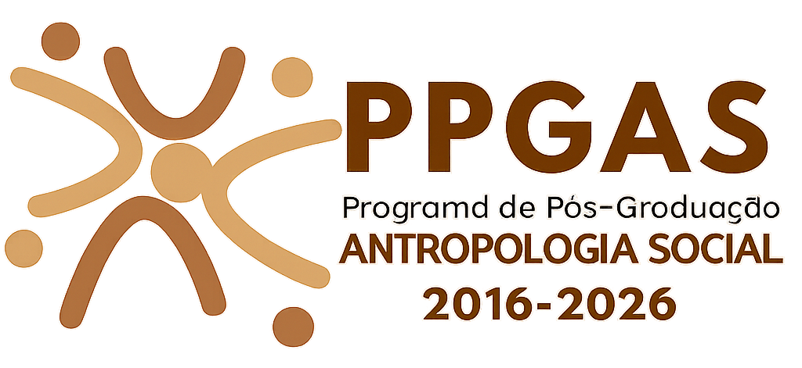
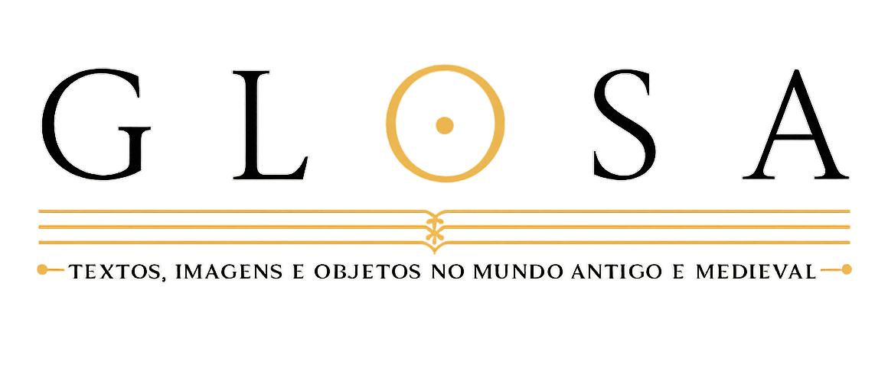
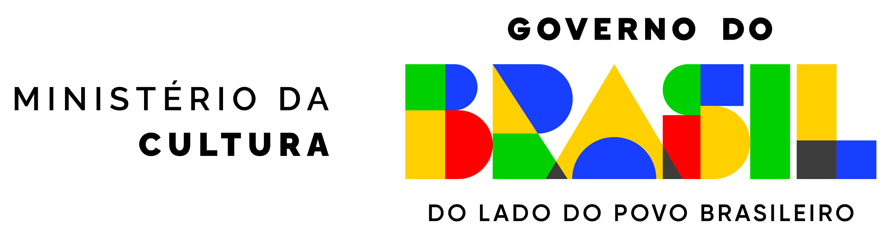

{kind=link}
Realização





Forum de Patrimônio Arqueológico e Mudanças Climáticas
O III Encontro de Arqueologia e História Antiga no Pantanal – Saberes em Trânsito: arqueologia, história e os caminhos do conhecimento corresponde à terceira edição de um evento que vem se consolidando na região como espaço de interação, diálogo e circulação de saberes em torno das temáticas do passado.
O evento promove debates a partir do território pantaneiro e de suas múltiplas conexões históricas, arqueológicas, culturais e ambientais, ampliando a troca entre pesquisadores, estudantes e comunidade.
Nesta edição, o encontro ocorre em diálogo com o I Fórum sobre Patrimônio Arqueológico e Mudanças Climáticas, promovido no âmbito do projeto FAPESP/UNICAMP/IPHAN.
A proposta é contribuir para o desenvolvimento de ações conjuntas voltadas à preservação do patrimônio arqueológico diante dos efeitos das mudanças climáticas, fortalecendo a articulação entre pesquisa acadêmica, gestão pública e sociedade.
III Encontro de Arqueologia e História Antiga do Pantanal
Quarta-feira
Passeio Histórico
Intervalo
Profa. Dra. Bruna Rocha (UFOPA)
Quinta-feira
Forte Junqueira
Intervalo
Sexta-feira
Passeio pela Orla (R$ 30,00 por pessoa)
Intervalo
Escolha abaixo a modalidade de participação no evento.
Inscrições para minicursos e passeios do evento
Inscrição para participação no minicurso acadêmico.
Minicurso • 25/06Oficina aplicada à história e arqueologia.
Passeio • 24/06Atividade guiada de educação patrimonial.
Passeio • 25/06Visita histórica orientada.
Passeio • 26/06Atividade cultural e patrimonial.
Acompanhe atualizações, inscrições e materiais do evento nos canais oficiais.


